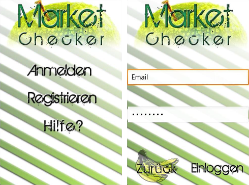
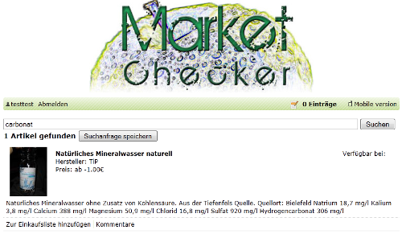

Market Checker is a software project, that was created in the summer semester 2011 at the Software Engineering 2 course of B.Sc. Applied Computer Science (B-AI).
It is a information platform where users can research and submit article prices in stores around their location. Users can insert articles, manufacturers and stores. Articles can be supplemented with pictures and comments. Pictures, comments and articles can be rated by users or, if they violate the terms of service, reported to the support.
Users have to validate their e-mail address when they register their account or change it later, for which they receive an e-mail [1]They did receive an e-mail. The mail server that was used doesn't exists anymore.. In their profile, users can change their unique user name (which is different from their login name) or upload an avatar, that are both shown to other users. Articles or search strings that a user wants to remember can be added to an arbitrary amount of shopping lists.
Project members were Jan Kuffer (Project lead and App), Philip Rose (Design and App), Vassilios Stavrou (App and API), Dimitri Fast (Website), Dieter Pisarewski (Website) and me (API and API tests).
An Android app with barcode scanner was developed in Java, and a website and mobile website were developed in Ruby. To support app, website, mobile website, and possible future applications, a central XML API was developed in PHP that serves as an secure interface to the database. Prior to their implementation, all API methods were specified in detail in the API documentation, which allowed their simultaneous developement with the app and websites.
Except for the article search method, which various optional parameters formed complex SQL statements, the API was implemented in time. To test the XML API, a test system using cURL was developed in PHP. Its output for a complete test with 966 individual test cases can be visited here. Most API methods and optional parameters aren't used by the app and website, but offer the possibility to extend them.
The websites aren't hosted anymore by their developer. I don't have access to the Ruby source code to host them by myself.
| Languages | PHP, SQL, XML, HTML, CSS, Java |
|---|---|
| Technologies | XSD, DTD, MySQL, ProFTPD, E-Mail, bcrypt, Mersenne Twister, cURL, convert (ImageMagick) |
| Tools | Skype |
| IDE | Notepad++, Eclipse |
| Participants | 6 |

{kind=link}
{kind=link}